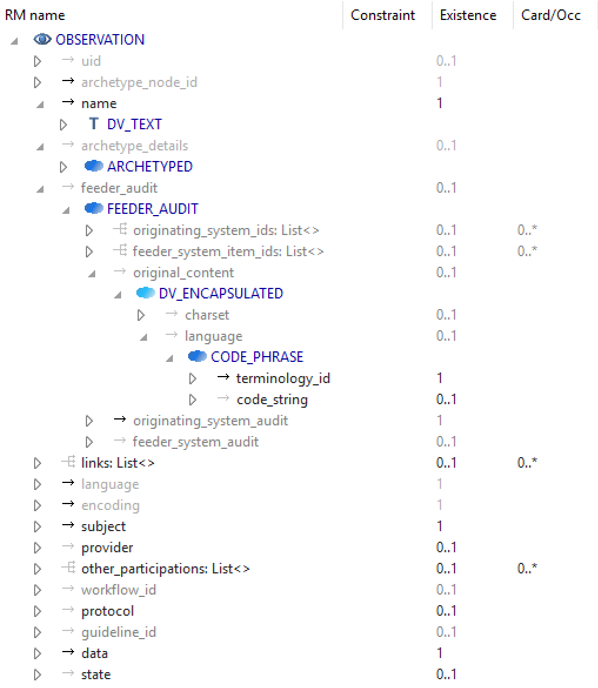
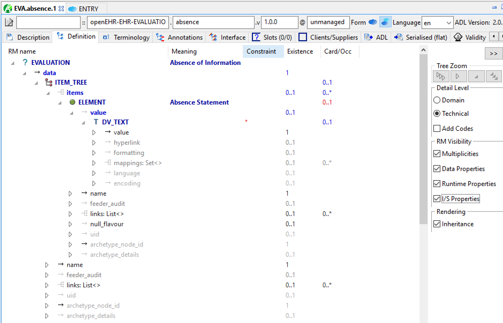
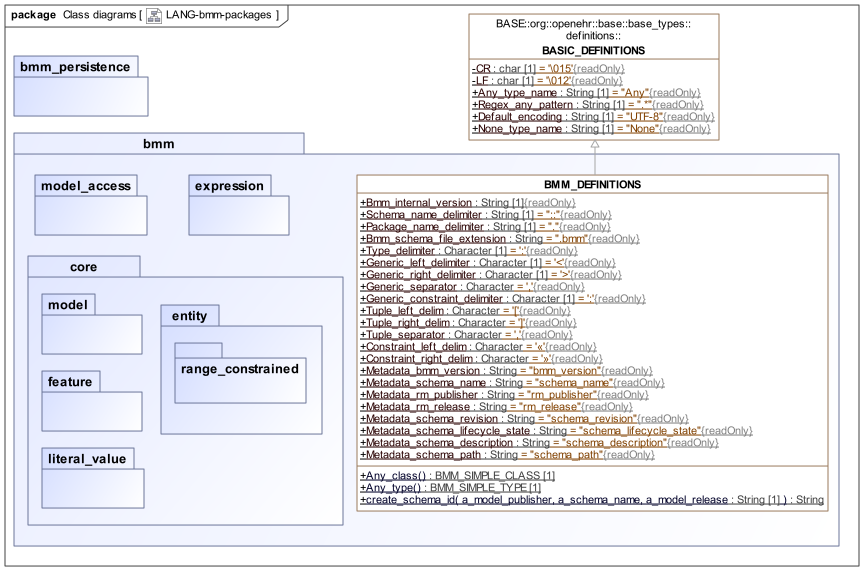

Overview
Introduction
One of the key needs in any open computing environment is a computable representation of its own models. This is for a number of purposes, including reasoning about them, performing validation and consistency checking, building software and generating documentation. This is particularly true of openEHR and other archetype-based frameworks, where a further need is to be able to validate archetypes and templates with respect to the reference model, and also to validate runtime instance data against operational templates and the reference model.
A number of computable representations of the openEHR published models have been available in the past. Currently models are represented in two computable forms, namely UML and BMM (i.e. the format described in this specification).
The primary use of the UML expression is for specification publishing. In this role, UML diagrams and static models are built, and then post-processed to correct signatures of class properties and functions. The post-processing corrects UML’s shortcomings and errors in non-singular relations, generic (template) types, and qualified attributes. The result can be used for publishing documentation with feature signatures that are formally correct and will be understood by developers in most programming languages. It can also be serialised and used computably, e.g. in other visualisation or modelling tools. UML’s own serial format, XMI is thus generally unsuitable for such uses, due to the formal errors, as well as its excessive complexity. XMI is also notoriously non-standard across UML tools.
As a result, openEHR introduced the Basic Meta-Model (BMM) in 2009 as a way of representing correct object-oriented semantics of information models for use in tools, along with a serial format by default expressed in the openEHR ODIN syntax.
The BMM provides a standalone alternative to UML/XMI which correctly represents all types, including open and closed generic types, inheritance of generic types, and various other problems with UML. As a meta-model it is adapted to the task, i.e. representing entity types that can appear in object models, rather than the over-generalised semantics of the UML meta-model. This reduced scope, and the fact that it contains no diagram semantics enables its serial form to be human-readable.
Features
The Basic Meta-Model supports the representation of object models in the ISO RM/ODP information and computational points of view, i.e. in programming terms:
-
definition of classes, properties and methods;
-
delayed routine calls as first-class objects;
-
expressions.
It is designed to enable both human authoring and machine processing, including e.g. extraction of BMM textual schemas from a UML tool or programming language classes. The semantics of the model are heavily influenced by the formal approach to object-orientation described by Bertrand Meyer in Object-oriented Software Construction [1] and also the Eiffel language, which is significantly better basis for object modelling than the UML 2.x meta-model. The BMM consequently departs from UML in a number of significant ways, and also from the OOSC/Eiffel approach in some aspects (e.g. direct meta-type suport for container types). Its key features are as follows:
-
OO+FP: the Basic Meta-Model is directly based on a combination of Object-oriented class model, functional programming concepts and expression language, rather than being a highly general model like the UML meta-model;
-
Proper type meta-model: types and Classes are distinguished in the meta-model, unlike UML which has no proper formal concept of type beyond a textual name;
-
Full generic types: types as first-order entities enables the proper representation of generic typing and inheritance from open, closed, or partially open generic types, unlike in UML;
-
Container types: such as
List<T>andHash<K,V>have their own meta-types; -
Enumerated types: supported via the notion of 'range-constrained' classes and also references to external value sets;
-
Built-in Expression Language: fully defined expression meta-model supporting literals, properties, variables, function calls and agents; includes qualifiers;
-
Design by contract (DbC): formally supported via class invariants and routine pre- and post-conditions;
-
Operator / function aliasing: support for mapping symbolic operators to function definitions.
Functional elements are supported via the inclusion of meta-types representing signatures and tuples, enabling the construction of delayed agent calls, known here as agents, and function applications (i.e. function calls).
Note that there is no BMM entity for graphical diagramming semantics. Thus, there is no idea of 'association' distinct from an 'attribute', as per UML, which treats lines between class boxes as formal elements.
Current State of the Art
UML
One would expect that the IT industry would have fully computable representations of models and diagramming solved, but it is not yet the case. UML 2.x and its associated serialisation format XMI 2.x should in theory mean that complete, interoperable machine expressions of object models would be available in all tools. However the evolution of UML and XMI has not been toward a clear meta-model and language for each of its sub-languages (i.e. static class model, state machine, interaction diagram etc) but rather toward a single universal model of everything in which elements of all of its needs are confusingly buried.
The UML 2.x specifications are exceedingly complex: UML 2.1.2 was specified by two documents, 'Superstructure' (738pp) and 'Infrastructure' (224pp); the UML 2.5.1 specification is only slightly smaller at 796 pages (see the OMG UML page for current specifications). The XMI 2.x specification is correspondingly complex, which seems to have so far prevented reliable tool interoperability (recognised as a critical issue by OMG in 2015). Despite the complexity, there are significant limitations in the UML meta-model, including:
-
the composite or association nature of a class property only being known if it is represented as an association, i.e. a line linking two classes on a UML diagram;
-
the notion of type is not adequately formalised;
-
the meta-model of generic types and container properties is problematic and does not map well to object programming languages;
-
the Design By Contract (DbC) concept (i.e. pre-, post-conditions, class invariants), crucial for proper specifications, is in theory supported via the use of OCL 2.0 constraints in class definitions, but OCL suffers from the same underlying semantic weaknesses as UML;
-
there is no direct support for functional entities, i.e. routine calls as objects (aka 'lambdas').
Experience with various UML tools (up till 2015) highlighted the following problems:
-
poor support for OCL and design by contract in most tools;
-
variable support for generic (i.e. template) classes; even those tools that properly implement the UML 2.5 specification are still very hard to use for defining generic classes because of problems in the specification that remain unaddressed;
-
problems with qualified attributes, which are used to represent identifier references to objects rather than direct references;
-
variable support for XSD generation across tools, where the results are wildly wrong in some tools;
-
in some tools, it is impossible to define an abstract formal model - the only option is to select a particular programming language profile such as Java or C# and thus get locked into the limitations of those languages (messy type systems, weak inheritance semantics, language-specific notion of types such as
Array<T>,List<T>, etc.).
Since 2015, the quality of some UML tools has improved, and the XMI generated by some is more reliable. However, XMI generated by different tools is not the same for identical models, and some XMI importers offer numerous switches in order to process the XMI of another tool properly. XMI thus still needs to be processed with care.
Nevertheless, a small number of tools, including MagicDraw (currently used for representing openEHR models for the specifications) and Rational Software Architect (RSA), appear to implement UML 2.5 faithfully. This means that despite the limitations of UML 2.5 (as noted above), models expressed in it can be mostly correctly interpreted and corrected by post-processing for purposes such as code generation and specifications publishing.
| Other tools may perform as well or better, and in any case, all tools change over time. No endorsement of a particular tool is intended here. |
XML Schema
For some, W3C XML schema represents a way of expressing object models, but it is not semantically suitable for this purpose, primarily due to its problematic non-object-oriented inheritance semantics, lack of generic classes, lack of representation of non-data members, and only marginal support for design by contract. It can be and is often used (including in openEHR) as a derivative serialisation representation.
Computational Model
The BMM is specified as a structural model representing an abstract syntax tree (AST), which is the result of either in-memory construction (such as by a model authoring tool) or by parsing of a serialised representation of a BMM model. It does not specify an abstract syntax, and indeed, more than one concrete syntax could be parsed to a BMM instance.
| for the purposes of explanation, an abstract syntax is used throughout this document that draws freely from mainstream modelling and programming languages. |
Uses of the BMM
Class Model Representation
The BMM from version 3.0.0 on may be used to represent a full class model at an interface level (i.e. without code for methods) including classes, types, and class feature types including property (i.e. attribute), symbolic constant, manifest value, functions, operators, and procedures.
Meta-Model Basis for Expressions Language
The BMM provides a system of meta-types that act as the basis for a typed expression language. These include references to static entities in scope (constants, variables, properties), literal values, construction of agents (lambda terms), and function calls (lambda applications).
Information Model Representation
Until version 3.0.0, BMM supported only the information point of view, i.e. no computational interface, and in that form, it is often used to express models of data. Tools based on BMM can provide views of an object model expressed in BMM that are particularly useful to information modelling, such as the 'closure' view show below. This is a computed reachability graph of a fully inheritance-flattened class and all properties, including recursive references.

Archetype Modelling
One of the uses of the BMM in the openEHR ADL Workbench and other similar tools is to provide a computable form of the information model for use with domain-level content models, such as archetypes. The following shows an archetype for which each node has its class shown (in colour), and additionally, the inclusion of non-archetyped attributes from the classes of the archetype nodes.

Newer tools are able to include the computational features.
The openEHR project makes extensive use of BMM for representing its models for use in tools. The full set of openEHR models in BMM format may be found in the specfications-ITS-BMM repository on Github.
Specification Structure
This specification defines a BMM object model, i.e. the in-memory object structure of a BMM. The related BMM Persistence specification defines an object model for a serialised schema form. The latter enables serialisation of a BMM into a concrete syntax such as ODIN, JSON or XML.
The BMM packages are as follows:
-
org.openehr.lang.bmm: the BMM-
model_access: the interface to most features including schema load/reload, generally used by an application as a reflection library; -
core: the core BMM classes used for in-memory representation of an object model. This consists of a number of sub-packages:-
model: meta-types representing models and packages; -
entity: meta-types representing classes and types including enumeration types, represented in therange_constrainedsub-package; -
feature: meta-types representing classes features, i.e. constants, routines, properties; -
literal_value: meta-types representing literal values; -
expression: an expression meta-model sufficient for expressing first-order predicate logic expressions, including class invariants and pre- and post-conditions.
-
-
Related packages are:
-
the
org.openehr.lang.bmm_persistencepackage, which contains the BMM Persistence classes.
These are illustrated below.

Class Definitions
BMM_DEFINITIONS Class
-
Definition
-
Effective
-
BMM
-
UML
Class |
BMM_DEFINITIONS |
|
|---|---|---|
Description |
Definitions used by all BMM packages. |
|
Inherit |
||
Constants |
Signature |
Meaning |
1..1 |
Bmm_internal_version: |
Current internal version of BMM meta-model, used to determine if a given schema can be processed by a given implementation of the model. |
1..1 |
Schema_name_delimiter: |
Delimiter used to separate schema id from package path in a fully qualified path. |
1..1 |
Package_name_delimiter: |
Delimiter used to separate package names in a package path. |
1..1 |
Bmm_schema_file_extension: |
Extension used for BMM files. |
1..1 |
Type_delimiter: |
Appears between a name and a type in a declaration or type signature. |
1..1 |
Generic_left_delimiter: |
Left delimiter for generic class and generic type names, as used in |
1..1 |
Generic_right_delimiter: |
Right delimiter for generic class and generic type names, as used in |
1..1 |
Generic_separator: |
Separator used in Generic types. |
1..1 |
Generic_constraint_delimiter: |
Delimiter between formal type parameter and constraint type, as used in |
1..1 |
Tuple_left_delim: |
Left delimiter of a Tuple type and also instance. Example:
|
1..1 |
Tuple_right_delim: |
Right delimiter of a Tuple type and also instance. |
1..1 |
Tuple_separator: |
Separator used in Tuple types and instances. |
1..1 |
Constraint_left_delim: |
Left delimiter used in serial form of instance constrained enumeration. |
1..1 |
Constraint_right_delim: |
Right delimiter used in serial form of instance constrained enumeration. |
1..1 |
Metadata_bmm_version: |
Attribute name of logical attribute 'bmm_version' in .bmm schema file. |
1..1 |
Metadata_schema_name: |
Attribute name of logical attribute 'schema_name' in .bmm schema file. |
1..1 |
Metadata_rm_publisher: |
Attribute name of logical attribute 'rm_publisher' in .bmm schema file. |
1..1 |
Metadata_rm_release: |
Attribute name of logical attribute 'rm_release' in .bmm schema file. |
1..1 |
Metadata_schema_revision: |
Attribute name of logical attribute 'schema_revision' in .bmm schema file. |
1..1 |
Metadata_schema_lifecycle_state: |
Attribute name of logical attribute 'schema_lifecycle_state' in .bmm schema file. |
1..1 |
Metadata_schema_description: |
Attribute name of logical attribute 'schema_description' in .bmm schema file. |
1..1 |
Metadata_schema_path: |
Path of schema file. |
Functions |
Signature |
Meaning |
1..1 |
Any_class (): |
built-in class definition corresponding to the top `Any' class. |
1..1 |
Any_type (): |
Built-in type definition corresponding to the top `Any' type. |
1..1 |
create_schema_id ( |
Create schema id, formed from:
e.g. |
| BMM_DEFINITIONS | |
|---|---|
Definitions used by all BMM packages. |
|
Inherits: BASIC_DEFINITIONS |
|
Constants |
|
Bmm_internal_version: |
Current internal version of BMM meta-model, used to determine if a given schema can be processed by a given implementation of the model. |
Schema_name_delimiter: |
Delimiter used to separate schema id from package path in a fully qualified path. |
Package_name_delimiter: |
Delimiter used to separate package names in a package path. |
Bmm_schema_file_extension: |
Extension used for BMM files. |
Type_delimiter: |
Appears between a name and a type in a declaration or type signature. |
Generic_left_delimiter: |
Left delimiter for generic class and generic type names, as used in |
Generic_right_delimiter: |
Right delimiter for generic class and generic type names, as used in |
Generic_separator: |
Separator used in Generic types. |
Generic_constraint_delimiter: |
Delimiter between formal type parameter and constraint type, as used in |
Tuple_left_delim: |
Left delimiter of a Tuple type and also instance. Example:
|
Tuple_right_delim: |
Right delimiter of a Tuple type and also instance. |
Tuple_separator: |
Separator used in Tuple types and instances. |
Constraint_left_delim: |
Left delimiter used in serial form of instance constrained enumeration. |
Constraint_right_delim: |
Right delimiter used in serial form of instance constrained enumeration. |
Metadata_bmm_version: |
Attribute name of logical attribute 'bmm_version' in .bmm schema file. |
Metadata_schema_name: |
Attribute name of logical attribute 'schema_name' in .bmm schema file. |
Metadata_rm_publisher: |
Attribute name of logical attribute 'rm_publisher' in .bmm schema file. |
Metadata_rm_release: |
Attribute name of logical attribute 'rm_release' in .bmm schema file. |
Metadata_schema_revision: |
Attribute name of logical attribute 'schema_revision' in .bmm schema file. |
Metadata_schema_lifecycle_state: |
Attribute name of logical attribute 'schema_lifecycle_state' in .bmm schema file. |
Metadata_schema_description: |
Attribute name of logical attribute 'schema_description' in .bmm schema file. |
Metadata_schema_path: |
Path of schema file. |
Functions |
|
Any_class (): |
built-in class definition corresponding to the top `Any' class. |
Any_type (): |
Built-in type definition corresponding to the top `Any' type. |
create_schema_id ( |
Create schema id, formed from:
e.g. |
{
"name": "BMM_DEFINITIONS",
"documentation": "Definitions used by all BMM packages.",
"ancestors": [
"BASIC_DEFINITIONS"
],
"constants": {
"Bmm_internal_version": {
"name": "Bmm_internal_version",
"documentation": "Current internal version of BMM meta-model, used to determine if a given schema can be processed by a given implementation of the model.",
"type": "String"
},
"Schema_name_delimiter": {
"name": "Schema_name_delimiter",
"documentation": "Delimiter used to separate schema id from package path in a fully qualified path.",
"type": "String",
"value": "\"::\""
},
"Package_name_delimiter": {
"name": "Package_name_delimiter",
"documentation": "Delimiter used to separate package names in a package path.",
"type": "String",
"value": "\".\""
},
"Bmm_schema_file_extension": {
"name": "Bmm_schema_file_extension",
"documentation": "Extension used for BMM files.",
"type": "String",
"value": "\".bmm\""
},
"Type_delimiter": {
"name": "Type_delimiter",
"documentation": "Appears between a name and a type in a declaration or type signature.",
"type": "Character",
"value": "':'"
},
"Generic_left_delimiter": {
"name": "Generic_left_delimiter",
"documentation": "Left delimiter for generic class and generic type names, as used in `List<T>`.",
"type": "Character",
"value": "'<'"
},
"Generic_right_delimiter": {
"name": "Generic_right_delimiter",
"documentation": "Right delimiter for generic class and generic type names, as used in `List<T>`.",
"type": "Character",
"value": "'>'"
},
"Generic_separator": {
"name": "Generic_separator",
"documentation": "Separator used in Generic types.",
"type": "Character",
"value": "','"
},
"Generic_constraint_delimiter": {
"name": "Generic_constraint_delimiter",
"documentation": "Delimiter between formal type parameter and constraint type, as used in `Sortable<T: Ordered>`.",
"type": "Character",
"value": "':'"
},
"Tuple_left_delim": {
"name": "Tuple_left_delim",
"documentation": "Left delimiter of a Tuple type and also instance. Example:\n\n* `[Integer, String]` - a tuple type;\n* `[3, \"Quixote\"]` - a tuple.",
"type": "Character",
"value": "'['"
},
"Tuple_right_delim": {
"name": "Tuple_right_delim",
"documentation": "Right delimiter of a Tuple type and also instance.",
"type": "Character",
"value": "']'"
},
"Tuple_separator": {
"name": "Tuple_separator",
"documentation": "Separator used in Tuple types and instances.",
"type": "Character",
"value": "','"
},
"Constraint_left_delim": {
"name": "Constraint_left_delim",
"documentation": "Left delimiter used in serial form of instance constrained enumeration.",
"type": "Character",
"value": "'«'"
},
"Constraint_right_delim": {
"name": "Constraint_right_delim",
"documentation": "Right delimiter used in serial form of instance constrained enumeration.",
"type": "Character",
"value": "'»'"
},
"Metadata_bmm_version": {
"name": "Metadata_bmm_version",
"documentation": "Attribute name of logical attribute 'bmm_version' in .bmm schema file.",
"type": "String",
"value": "\"bmm_version\""
},
"Metadata_schema_name": {
"name": "Metadata_schema_name",
"documentation": "Attribute name of logical attribute 'schema_name' in .bmm schema file.",
"type": "String",
"value": "\"schema_name\""
},
"Metadata_rm_publisher": {
"name": "Metadata_rm_publisher",
"documentation": "Attribute name of logical attribute 'rm_publisher' in .bmm schema file.",
"type": "String",
"value": "\"rm_publisher\""
},
"Metadata_rm_release": {
"name": "Metadata_rm_release",
"documentation": "Attribute name of logical attribute 'rm_release' in .bmm schema file.",
"type": "String",
"value": "\"rm_release\""
},
"Metadata_schema_revision": {
"name": "Metadata_schema_revision",
"documentation": "Attribute name of logical attribute 'schema_revision' in .bmm schema file.",
"type": "String",
"value": "\"schema_revision\""
},
"Metadata_schema_lifecycle_state": {
"name": "Metadata_schema_lifecycle_state",
"documentation": "Attribute name of logical attribute 'schema_lifecycle_state' in .bmm schema file.",
"type": "String",
"value": "\"schema_lifecycle_state\""
},
"Metadata_schema_description": {
"name": "Metadata_schema_description",
"documentation": "Attribute name of logical attribute 'schema_description' in .bmm schema file.",
"type": "String",
"value": "\"schema_description\""
},
"Metadata_schema_path": {
"name": "Metadata_schema_path",
"documentation": "Path of schema file.",
"type": "String",
"value": "\"schema_path\""
}
},
"functions": {
"Any_class": {
"name": "Any_class",
"documentation": "built-in class definition corresponding to the top `Any' class.",
"result": {
"_type": "P_BMM_SIMPLE_TYPE",
"type": "BMM_SIMPLE_CLASS"
}
},
"Any_type": {
"name": "Any_type",
"documentation": "Built-in type definition corresponding to the top `Any' type.",
"result": {
"_type": "P_BMM_SIMPLE_TYPE",
"type": "BMM_SIMPLE_TYPE"
}
},
"create_schema_id": {
"name": "create_schema_id",
"documentation": "Create schema id, formed from:\n\n`a_model_publisher '-' a_schema_name '-' a_model_release`\n\ne.g. `openehr_rm_1.0.3`, `openehr_test_1.0.1`, `iso_13606_1_2008_2.1.2`.",
"parameters": {
"a_model_publisher": {
"_type": "P_BMM_SINGLE_FUNCTION_PARAMETER",
"name": "a_model_publisher",
"type": "Any"
},
"a_schema_name": {
"_type": "P_BMM_SINGLE_FUNCTION_PARAMETER",
"name": "a_schema_name",
"type": "Any"
},
"a_model_release": {
"_type": "P_BMM_SINGLE_FUNCTION_PARAMETER",
"name": "a_model_release",
"type": "String"
}
},
"result": {
"_type": "P_BMM_SIMPLE_TYPE",
"type": "String"
}
}
}
}